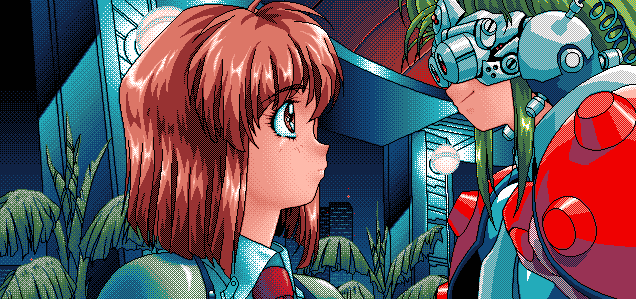

Setup
Personal Computer
I use a TailsOS USB as my main PC. For my operating system I'm using PureOS IT JUST WORKS. Anyway I might change to Guix if I ever decide to learn lisp 🤮 or OpenBSD even though there is some performance issue due to the additional security layers.
Keyboard
Flashing Lights
Software
qTox - here.
RetroShare - here.
LibreWolf - here.
Tor - here.
I have a
git repository for my wallpapers which you can find
here.
